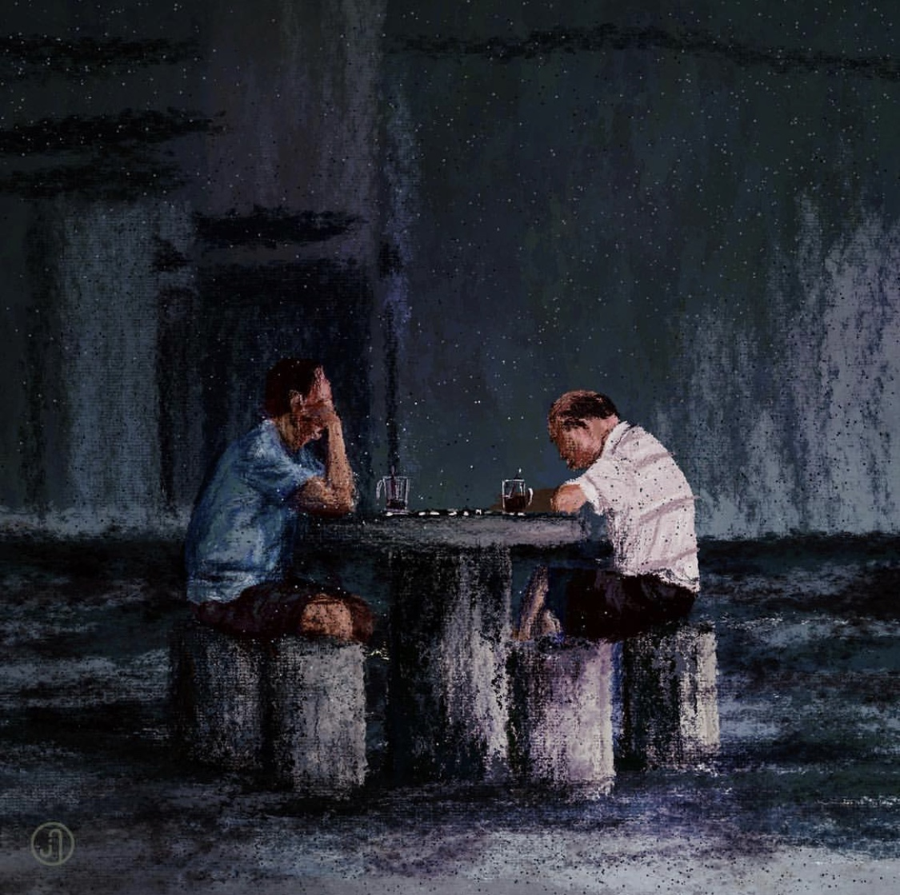

Capturing Singaporean Stories
 Usually, Jonathan takes photos secretly as they are reference photos.
But for this, he asked the couple/friends if he could. Hence, this painting holds a little more special meaning to him.
Usually, Jonathan takes photos secretly as they are reference photos.
But for this, he asked the couple/friends if he could. Hence, this painting holds a little more special meaning to him.

"Time's arrow neither stands still nor reverses, it merely marches forward."
 "Almost all the photos were taken by me. Only one was taken by my friend – the girl holding the flag on the bus.”
"Almost all the photos were taken by me. Only one was taken by my friend – the girl holding the flag on the bus.”
 “Story is always at the heart of the work. Everything else is a means to that end.”
“Story is always at the heart of the work. Everything else is a means to that end.”
"One of my favourite places."